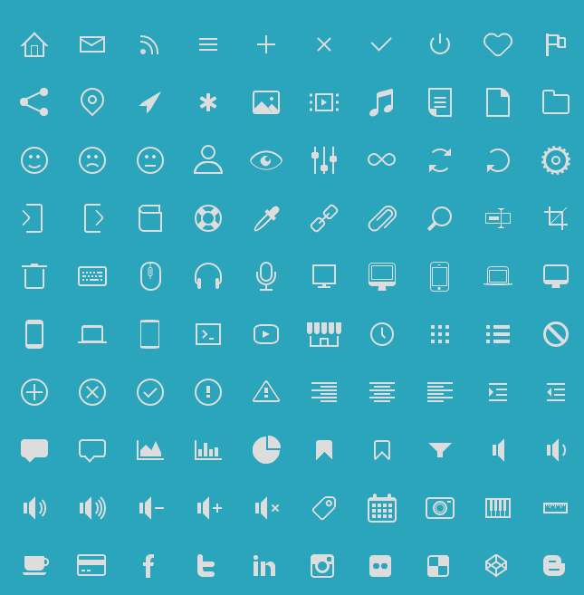
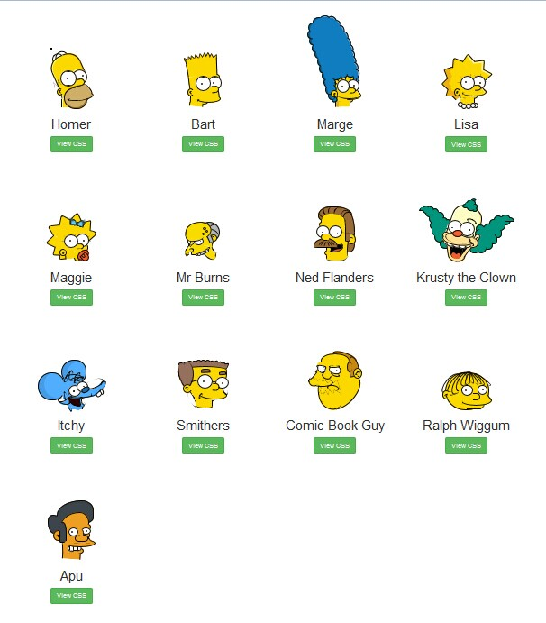
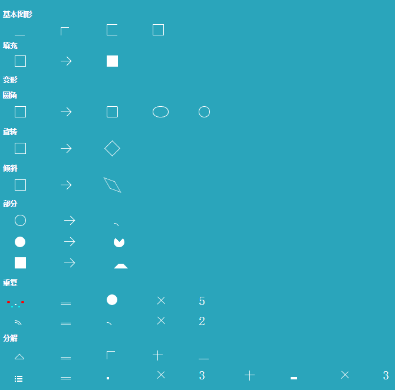
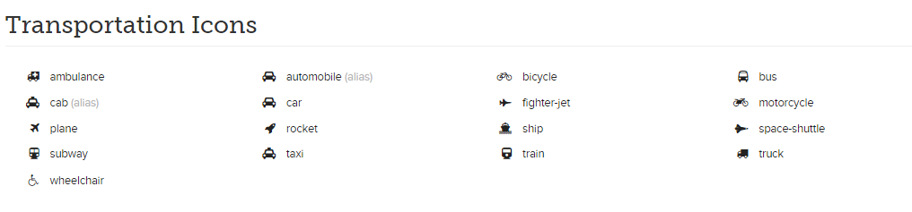
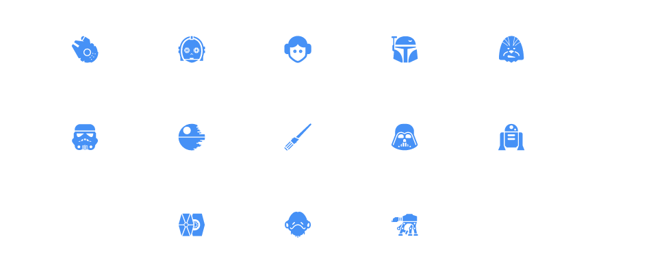
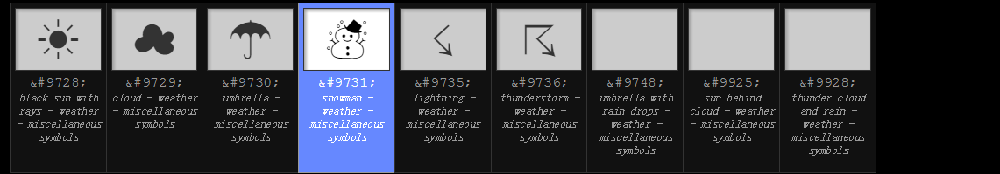

用纯CSS做图标
目录
关于我
纯CSS做的酷炫的图标
如何实现
其他方式来做图标
Q&A
关于我
努力做体面
前端攻城狮
更多
Github
博客
iamjoel007@gmail.com
纯CSS做的酷炫的图标


如何实现
所有的图标都是通过一些基本的图标变形组合而来的

浏览器兼容性
border-radius
IE9+,Chrome,Firfox
transform
IE9+,Chrome,Firfox
boxshadow
IE9+,Chrome,Firfox
:before,:after
IE8+,Chrome,Firfox
其他方式来做图标
图片
优点
兼容主流浏览器。包括，IE6+
复杂图标相对比较好做
缺点
缩放会有失真
不能调整图标内容的颜色
icon font
把图标做成字体

优点
兼容主流浏览器。包括，IE6+
缩放不失真
能调整图标的颜色
有许多现成能用的
资源
缺点
新增图标时略显麻烦
SVG icons
用SVG来做图标

优点
缩放不失真
能调整图标的颜色
缺点
浏览器兼容性： 兼容IE9+
html字符实体

优点
缩放不失真
能调整图标的颜色
无需制作
缺点
兼容的浏览器与具体的HTML实体相关。
拓展阅读
基于单个 div 的 CSS 绘图
Inline SVG vs Icon Fonts [CAGEMATCH]
超越 icon font
Q&A
The End
谢谢！